The original captures below show the initial size and centered strip.
Registered poses extracted with the production nearest filter. Canvases retain their shared ground anchor. Death plays once and holds its bone pile; prone is a separate intact pose.
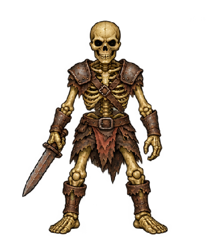
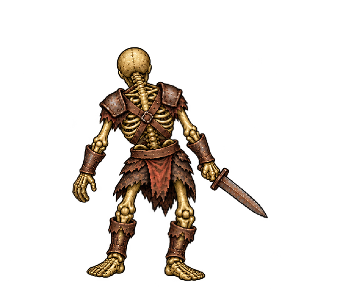
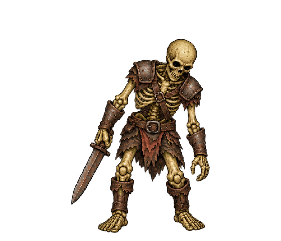
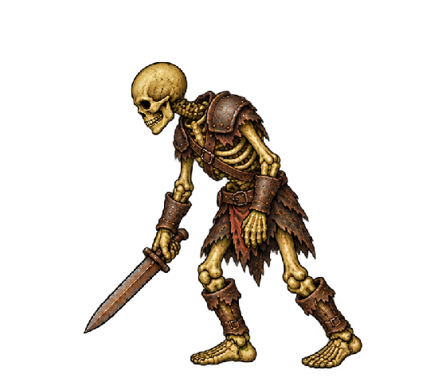
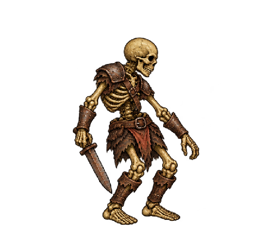
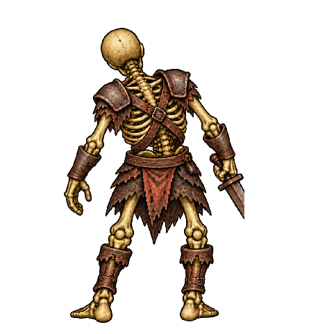
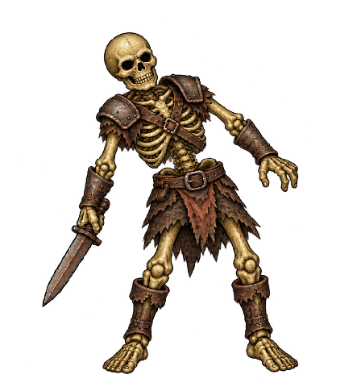
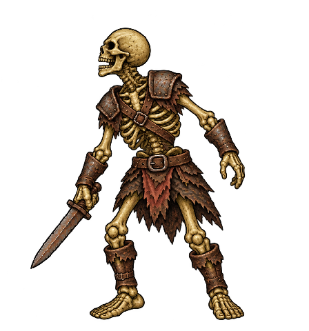
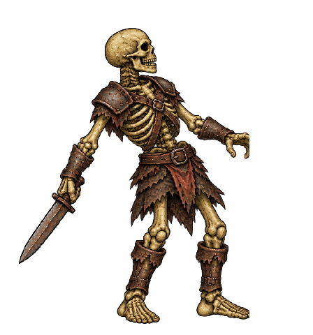
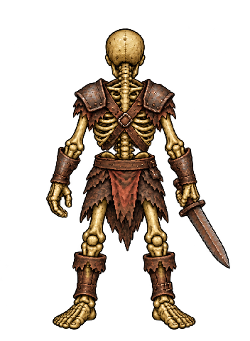
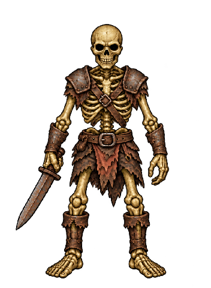
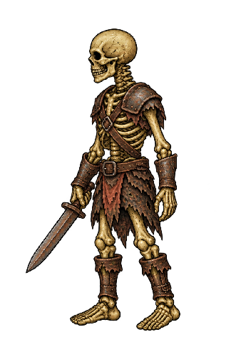
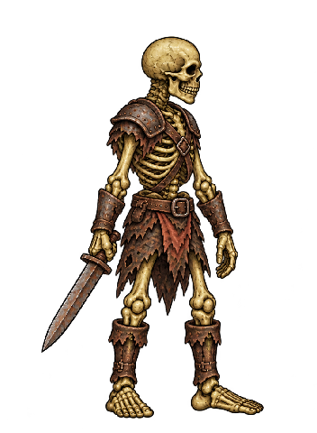
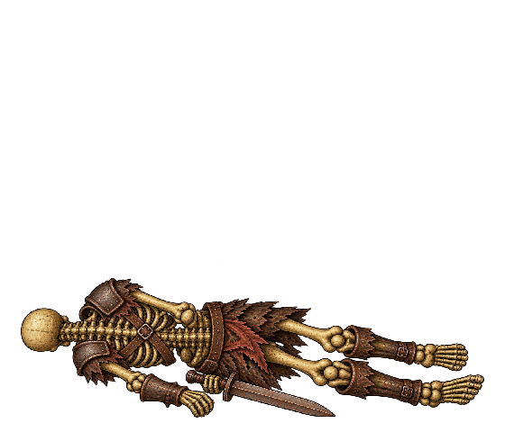
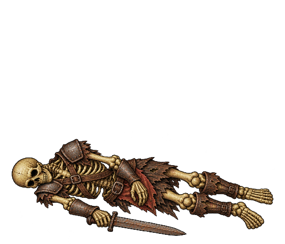
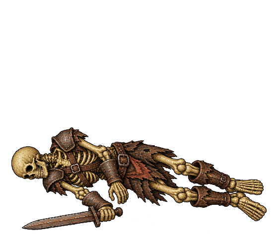
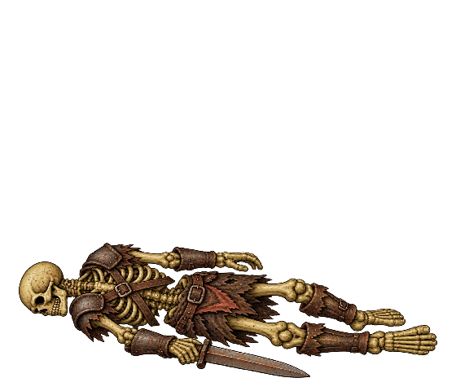
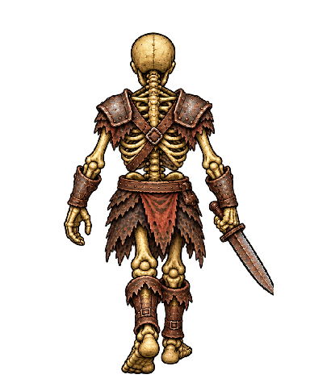
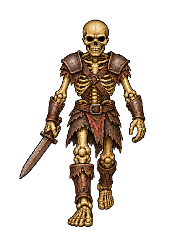
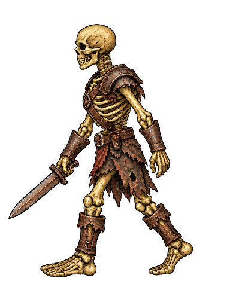
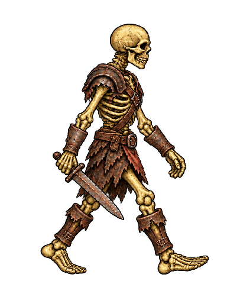
Strict replays matched. Capture reconstructs the current HUD and omits historical combat logs/floating feedback. Exact typed impacts are retained in review-final.json.
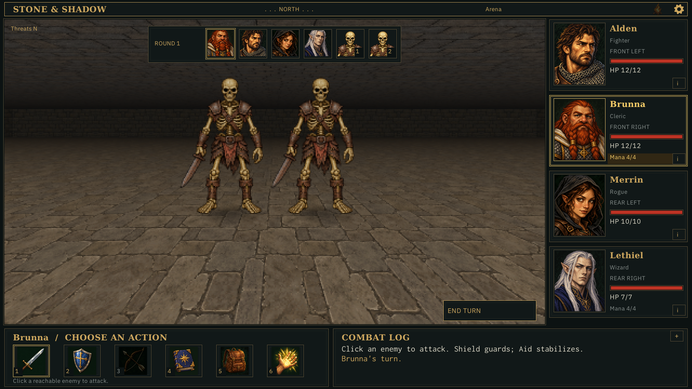
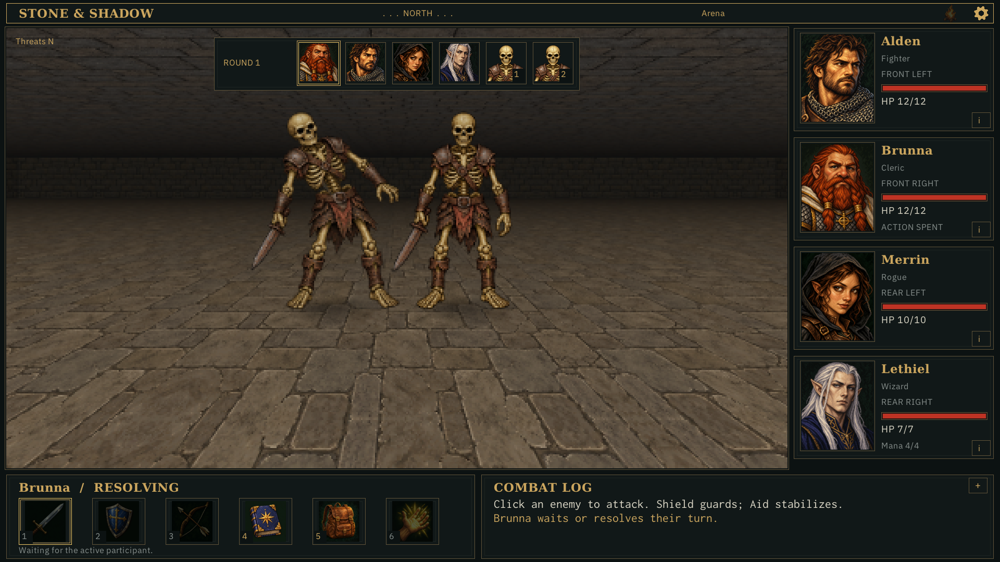
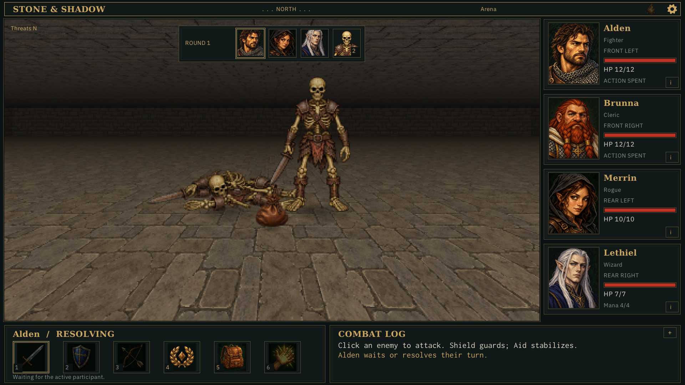
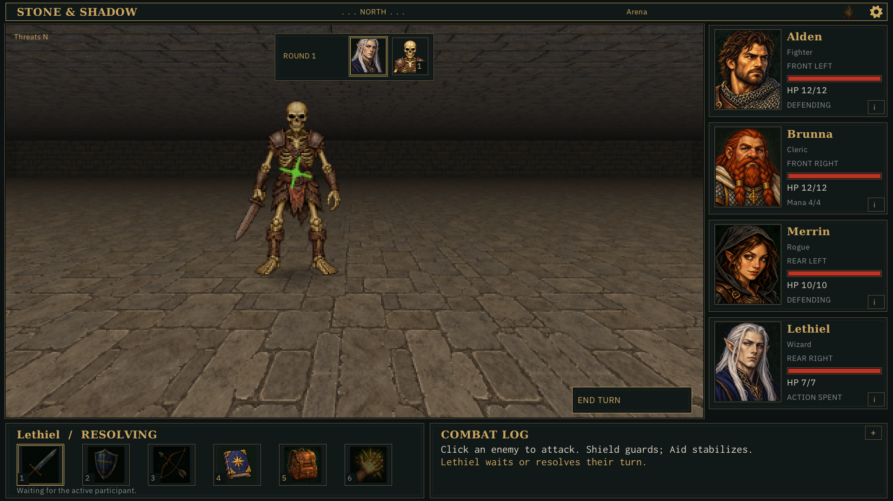
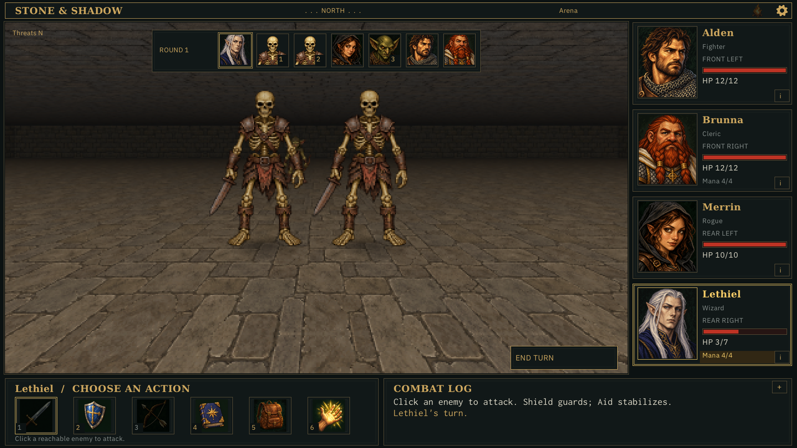